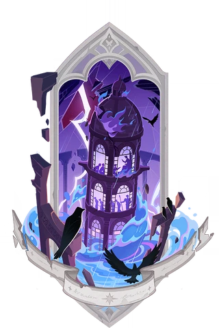

Mondstadt · Gods & Divinity
Decarabian
Decarabian, the God of Storms and Lord of the Tower, ruled Old Mondstadt from behind a hurricane wall. Venti’s account and later weapon and artifact histories trace the resistance, the deaths of Amos and the Nameless Bard, and the rise of Barbatos.

The God of Storms and Lord of the Tower
Venti identifies Decarabian as the God of Storms who ruled Old Mondstadt from a high tower. The city’s ruins are now part of Stormterror’s Lair. Weapon-ascension records also call him the Lord of the Tower; one calls the capital a dream of prosperity made possible by his divine power.
Venti’s Story Quest dates the events he remembers to about 2,600 years ago, before the world came under the rule of the Seven. The Biography of Gunnhildr begins its family legend three thousand years ago, during a conflict between Decarabian and Andrius. These are different dates in different records, and the game has not explained the gap.
Decarabian’s personal name is known, but the records do not give a full biography, a reliable account of his origins, or a named model of his appearance. The official Venti story teaser and quest cutscene are the main visual depictions of him.
A city inside the storm wall
A ferocious hurricane sealed Old Mondstadt. In Venti’s account, Decarabian looked down from his tower, saw people bent beneath the wind, and mistook their posture for willing submission. A weapon-ascension text makes the correction explicit: the people were forced down by the harsh winds, not bowing from respect or adoration.
The records preserve two sides of this history without making them equivalent. Decarabian is associated with a dream of prosperity and a city powerful enough to withstand Boreas’s assault, but the same wall trapped its residents and enabled his rule. The Biography of Gunnhildr describes people who left the city and faced blizzards outside; it does not settle every reason the barrier was first raised.
Music became part of the resistance. Windblume appears in weapon lore as a discreet sign for people opposing Decarabian, while Freedom-Sworn remembers a song sung in dark places when Mondstadt was oppressed. Another weapon history says certain chords and tunes were forbidden because they could carry rebellion. These traditions connect Mondstadt’s later association with song and freedom to the old city’s silenced voices.
Amos and the God King
Amos was a huntress, archer, and Decarabian’s favored confidante. Her bow’s item story says she used it in an attempt to kill him. The newer artifact set A Day Carved From Rising Winds gives the relationship more detail: it depicts Amos as having been offered to the ruler by her clan, elevated because of her skill, and drawn into violence against people who resisted him.
The artifact titled Minnesang of Love and Lament portrays Amos as believing that Decarabian cherished her, then realizing that his idea of love did not include seeing or understanding her as she understood herself. It does not absolve her of the harm she helped inflict. Her final attack is presented as both a rebellion and a last attempt to make the ruler truly see her; the story ends with them striking each other and both dying.
This makes Amos more than a simple captive who changes sides. The game’s item histories show a person implicated in the regime, emotionally devoted to its ruler, and finally turned against him. They do not provide an independent account of every private thought she had.
The people who challenged the tower
Venti’s Story Quest recalls a nameless young bard who wanted to see birds, grass, and the open sky, and a small wind spirit who befriended him. The bard’s wish to see beyond the city became part of the rebellion’s call for freedom; the spirit later became Barbatos.
Freedom-Sworn describes a five-person group by role: a youth, a spirit, an archer, a knight, and a wandering flame-haired warrior. Amos supplies the archer, and other accounts place Gunnhildr and her clan among the rebels. The item descriptions do not securely match every role to a personal name, so the identity of the knight should remain open. The red-haired warrior is also unnamed in the records used here.
The Biography of Gunnhildr adds a separate strand: Gunnhildr’s father led the clan away from Decarabian’s city after becoming disillusioned with his rule; the clan struggled in the blizzards, and a wind spirit answered their prayers with shelter. Gunnhildr later led her people in support of Barbatos. The book is a modern descendant’s collection of family legends, so its favorable account of the clan should be read as such.
The fall of Decarabian
The rebels reached the tower and Decarabian was slain. Amos and the Nameless Bard also died in the struggle. Venti’s later account confirms that the bard fell fighting for song, sky, birds, and the people who lived inside the storm wall; the official teaser and quest cinematic show the rebellion in stylized form.
The goblet story in A Day Carved From Rising Winds says Amos’s last arrow pierced the wind wall and that Decarabian’s fall was followed by a final, dangerous tempest. It describes the bard playing his lyre as the storm gathered, with the wind then falling silent. This is an additional in-game account from an artifact, not dialogue spoken by Venti in the original quest scene.
The artifact text treats the tower’s destruction and the storm as part of the same catastrophe. It does not map every image in its poem onto a literal sequence of seconds, so the exact mechanics of the final tempest remain unstated.
The bard, Barbatos, and the language of time
After the old god’s fall, the wind spirit rose as Barbatos. In Venti’s Story Quest, he explains that his present appearance is the form of the friend he lost. That is the clearest direct explanation for the Anemo Archon’s human likeness and the grief behind it.
A Note in Spring’s Leich, another piece in A Day Carved From Rising Winds, adds a more mysterious version of the final moment. It speaks of strings once belonging to a Master of Time, the bard’s body becoming an instrument, and the Mother of Time and Wind granting authority to the tiny spirit. The piece also says that the spirit reclaimed a strand of time and the name that could otherwise have been lost.
The same artifact uses the title Mother of the Thousand Winds as well as Mother of Time and Wind. This strongly points toward the time-and-wind figure discussed elsewhere in the archive, but the poem does not spell out the power’s rules, why it was granted, or everything the bard did. Its account should be kept beside Venti’s simpler recollection rather than treated as a full explanation of time in Teyvat.
The newborn god and Mondstadt’s memory
Windborne Flower’s Spruchdichtung presents the Gunnhildr clan’s pledge to the newborn god after the struggle. The clan remembers hardship outside the city, fighting beside divinity at the tower, and receiving shelter from gentler winds. It offers blossoms and loyalty rather than the other clans’ songs, halls, or gifts, and promises to resist again if a tyrant ever oppresses mortals.
The set’s five pieces therefore extend the older story beyond Decarabian’s death: they preserve the rebel guard’s defection, Amos’s life and final choice, the bard’s song, and the clan’s oath. Their poetic voices are distinct in-world records, not a neutral narrator who resolves every gap.
Decarabian’s capital became the ruin now called Stormterror’s Lair. His legacy survives in Mondstadt’s history, in the names of weapon-ascension materials such as Tile of Decarabian’s Tower and Scattered Piece of Decarabian’s Dream, and in songs that remember the cost of the old storm wall.
What the records leave unsettled
The game has not given a complete account of Decarabian’s origins, the precise structure of his government, the original purpose of the storm wall, or what he understood about the suffering inside it. His relationship with Andrius is placed in the same historical period, but the surviving records do not supply a full, consistent chronology of their conflict.
The rebel group’s role labels are not all matched to named people. The knight’s identity and the flame-haired warrior’s personal name remain unconfirmed in these sources. The artifact set adds references to a time-linked instrument and a grant of authority, but does not explain their full operation or settle exactly how they fit into Barbatos’s rise.
For a grounded reading, compare Venti’s first-person recollection and quest scene with the weapon materials, the Gunnhildr family history, the official teaser, and the later artifact narratives. Keep the quest’s approximate 2,600-year date distinct from the family book’s 3,000-year opening, and attribute poetic additions to the item that tells them.
This is an original CoreGG reading guide, not an official HoYoverse article or a reproduction of the game text. Source links below identify the records used so you can check the original context.
Sources & references
Check these sources for the original game text and reference trail.
- Genshin Impact Wiki · lore reference
- Teyvatica · Venti Story Quest transcript and source notes
- Genshin Impact · Story Teaser: The Boy and the Whirlwind
- HoYoWiki · Amos' Bow
- HoYoWiki · Freedom-Sworn
- Genshin Impact Wiki · A Day Carved From Rising Winds (artifact stories)
- HoYoWiki · Artifacts index
- Genshin Impact Wiki · The Biography of Gunnhildr